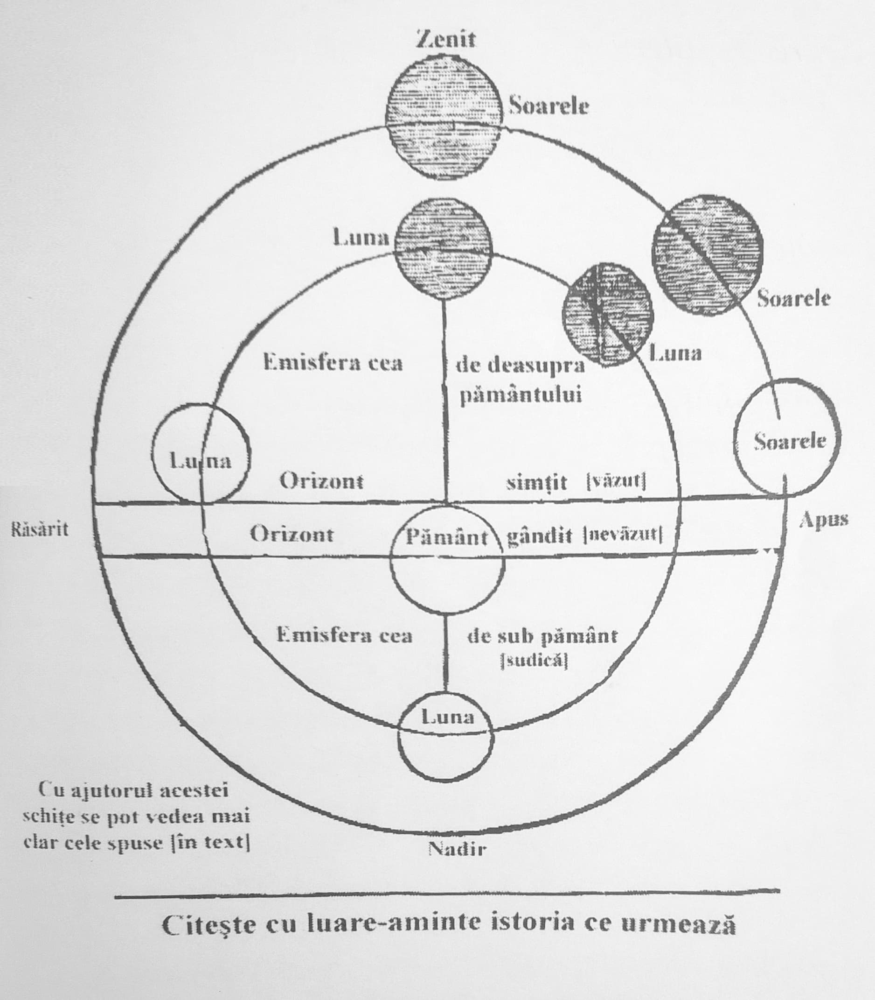

„Iar din al șaselea ceas, întuneric fu peste tot pământul, până la al nouălea ceas” (Matei XXVII, 44).
„Și, fiind ceasul al șaselea, întuneric fu peste tot pământul, până la al nouălea ceas” (Marcu XV, 33).
„Și era ca la al șaselea ceas, și întuneric se făcu peste tot pământul, până la al nouălea ceas, și se întunecă soarele și se spintecă catapeteasma bisericii prin mijloc” (Luca XXIII, 44).
„…Cel ce pe lemn puterile cele potrivnice a biruit, soarele întunecând și pământul clătindu-se…” (Lepădări la Sfântul Botez)
Pentru câte minuni cuprinde întru sine minunea lipsirii soarelui, ceea ce mai presus de fire s-a făcut la răstignirea Domnului, sau – mai bine a zice – a întunecării soarelui.
„Când S-a răstignit Domnul nostru, era amiază de primăvară, adică de douăsprezece ceasuri ziua și douăsprezece ceasuri noaptea, după așezămintele Sfinților Apostoli și după grăitorii pentru pascalie. Și soarele nu s-a întunecat de la sineși (precum a socotit Orighen), ci de la lună care – cu toate că era lună plină, de patrusprezece zile, după Dumnezeiasca Scriptură – venind sub soare și mergând împreună, l-a întunecat pe el, precum a văzut cu ochii săi călătoria aceasta împreună și întunecarea dumnezeiescul Dionisie Areopagitul, aflându-se în Heliopolis al Egiptului împreună cu Apolofan, și scrie învederat despre aceasta în trimiterea către Policarp. Acestea – zic – așa fiind cunoscute mai înainte, vezi câte minuni au urmat și câte legi ale firii s-au schimbat întru această lipsire mai presus de fire:
– Căci, după legile firii, în vremea când este lună plină, e cu neputință a călători soarele împreună cu luna. Fiindcă atunci se află amândoi luminătorii după potrivire, anume: dacă soarele se află la miazăzi cea deasupra pământului și la semnul mijlociu al cerului despre vârf, ce se numește zenit, luna se află drept după potrivire la semnul mijlociu al cerului cel de sub pământ, ce se numește nadir. Și altfel. Asemenea și dacă soarele se află la apus, luna se află la răsărit. Însă, la răstignirea Domnului, legile acestea firești s-au schimbat și s-a făcut împreună călătoria soarelui și a lunii mai presus de fire și preaslăvită.
– Căci luna a pășit înainte și într-un minut a luat douăsprezece ceasuri întregi. Căci în minutul acela întru care se cădea să se afle la semnul cel de sub pământ nadir, ea s-a aflat la semnul cel mai deasupra pământului zenit. Fiindcă, alergând cu nespusă și neînțeleasă iuțeală pe dedesubt de mijlocul emisferei celei de sub pământ până la cealaltă emisferă mai presus de pământ, a ajuns soarele la mijlocul cerului, întru al șaselea ceas al zilei întru care S-a răstignit Domnul, și așa a călătorit împreună cu dânsul.
– […] Și amiaza cea luminată a Vinerii celei mari s-a făcut prea-adânc miez de noapte. Și mai departe întunecarea aceasta s-a făcut peste toată lumea și peste tot locul […] Pentru aceasta au zis într-un glas împreună și cei trei evangheliștii, Matei (XXVII, 46), Marcu (XV, 33) și Luca (XXIII, 44): «Și întuneric se făcu preste tot pământul.»
– Căci, după ce a acoperit tot discul soarelui, luna a urmat împreună cu dânsul către apus, acoperindu-l pe el trei ceasuri întregi, până la al nouălea ceas (ora 15, 3 după amiază), după cum zic dumnezeieștii evangheliști: Matei (XXVII, 45), Marcu (XV, 33) și Luca (XXIII, 44). Adică nu l-a acoperit și nu l-a descoperit pe el puțin câte puțin, cum se întâmplă la lipsirile cele firești, ci acoperindu-l pe dânsul cu totul întru aceste trei ceasuri (12-15). Lucru care este mai presus de fire și prea-slăvit.
– Căci, după ce luna a acoperit soarele vreme de trei ceasuri, l-a descoperit iarăși, însă împotriva rânduielii celei firești. Căci, când se face călătorie împreună firească și întunecare a soarelui [eclipsă], partea soarelui care se întunecă cea dintâi, aceea se și luminează mai întâi. Însă atunci, partea soarelui care s-a întunecat mai întâi s-a luminat la urmă, și partea care s-a întunecat pe urmă s-a luminat întâi. Pentru aceea scria către Policarp dumnezeiescul Dionisie despre aceasta, zicând așa: «Și, iarăși, nu dintru aceeași făcându-se nici căderea, nici curățirea, ci din cea împotrivă după potrivire.»
– Căci – după ce luna a urmat împreună cu soarele către apus, acoperindu-l pe el trei ceasuri până la al nouălea ceas din zi (3 după amiază) – nu i-a urmat mai mult, nici n-a apus împreună cu dânsul, nu! Ci, lăsându-l pe el acolo, la locul cerului al ceasului al nouălea, ea s-a întors înapoi la răsărit. Și, până să treacă soarele depărtarea cerului a celor trei ceasuri ce rămăseseră până să se săvârșească ziua și să apună, luna a grăbit, și a trecut cele nouă ceasuri în trei ceasuri. Și astfel, când soarele s-a aflat la marginea apusului, luna s-a aflat după potrivire în cealaltă margine a răsăritului, și așa amândoi luminătorii s-au așezat și s-au arătat iarăși în rânduiala lor cea firească. Drept pentru care, pasărea cerului Dionisie îi scria lui Policarp și despre aceasta: «Și iarăși o vedem pe dânsa (adică pe lună), de la al nouălea ceas (3 după amiaza) până seara, stând cu prea-slăvire la potrivirea soarelui. Adu-i aminte încă și altceva lui (adică lui Apolofan), căci știe că și căderea aceasta am văzut-o începându-se de la răsărituri și venind până la marginea soarelui, apoi împotrivindu-se înapoi.»
Încât, ca să semuim toate cele zise mai-nainte: la răstignirea Domnului, luna a pășit înainte 15 (cincisprezece) ceasuri, adică a mers înainte din drumul și din locul său cel firesc; adică 12 ceasuri până ce a venit din jos de semnul cerului de miazănoapte și l-a ajuns pe soare la semnul de miazăzi al cerului, și 3 (trei) ceasuri întru care a urmat soarelui către apusuri, acoperindu-l pe el; și 9 ceasuri a mers această lună înapoi, întorcându-se înapoi la răsărit. Încât luna a făcut atunci o noapte și o zi ale ei în 42 (patruzeci și două) de ceasuri întregi. Adică șase ceasuri pe care le avea luate de la apusul ei cel firesc, până ce a venit la mijlocul emisferei celei de sub pământ; și 24 (douăzeci și patru) pășind înainte, precum am zis, și iarăși întorcându-se înapoi; și [încă] 12 (douăsprezece) ceasuri mergând de la răsărituri până la celălalt apus al ei și împlinind lungimea nopții, după fireasca sa rânduială și mișcare.
Văzut-ai, frate, câte minuni cuprinde întru sine o singură minune a lipsirii soarelui, care s-a făcut în vremea răstignirii Domnului? Slăvește de aici pe Hristos Cel ce S-a răstignit, Care, deși cu trupul era spânzurat pe Cruce, totuși cu dumnezeirea era atotputernic și lucra niște minuni ca acestea, după cum zice acest Dionisie în Trimiterea către Policarp: «Atâtea sânt cele mai presus de fire ale vremii de atunci și singur lui Hristos putincioase, Celui a toate pricinuitor, Care face lucruri mari și prea-slăvite, cărora nu le este număr.» Această minune mult-minunată a lipsirii soarelui, cercându-se cu de-amănuntul, a fost de-ajuns lui Dionisie și lui Apolofan, care erau elini, să cunoască dumnezeirea lui Iisus Hristos. Căci, privind aceasta, dumnezeiescul Dionisie mai-nainte a ghicit și a zis: «Un Dumnezeu neștiut pătimește cu trupul, [lucru] pentru care totul s-a întunecat și s-a clătit.» (Mihail Singhelul, în cuvântul de laudă cel către dânsul). Iar Apolofan, cel ce a rămas elin [2], mai-nainte a ghicit și el, și i-a zis dumnezeiescului Dionisie: «O bunule Dionisie! – acestea sunt schimbări ale dumnezeieștilor lucruri.» Adică – după Pahimer – „acestea sunt schimbări ale dumnezeieștilor lucruri” pentru că înșelăciunea se va schimba întru adevăr, întunericul în lumină, moartea în viață, omul se va face Dumnezeu și cele asemenea acestora.
Dintre elini, lipsirea aceasta o arată și Flegon, scriitorul de ani, în 13 al cronografilor. Și din cei vechi dintre ai noștri, African, în 5 al cronografilor, și Eusebiu Pamfil. Iar din cei de pe urmă, dumnezeiescul Maxim Pahimerul, Ghenadie Scolarul, Nichifor Teotoche și Corderie Iezuitul, în cărțile Sfântului Dionisie cele de curând date la iveală în două volume. Însă nu au spus așa de limpede aceasta. Iar Domnului nostru Iisus Hristos, Celui care printr-o minune ca aceasta Și-a făcut cunoscută dumnezeirea Sa și a încredințat-o, fie-I slavă și stăpânire în veci! Amin!”
(Sfântul Nicodim Aghioritul, Războiul nevăzut)
Nu numai Sfântul Dionisie a intuit cu dreptate ceea ce se petrecea pe cer, ci, cu atât mai vârtos tâlharul din dreapta:
„Văzând tâlharul pe Începătorul vieții pe Cruce spânzurând zicea: de n-ar fi fost Dumnezeu întrupat, Care cu noi S-au răstignit, nu și-ar fi ascuns soarele razele sale, nici nu s-ar fi clătit pământul, cutremurându-se…” (Tropar Ceasul VI în Post)

În figura alăturată, răsăritul a fost pus la stânga și, consecvent, miază-zi (zenitul) este pus sus. Luna plină parcurge drumul de la miază-noapte (nadir) până la miază-zi, ceasul 6 (12 la noi) într-un minut.
Avem acum de-a face cu o dublă eclipsă; de soare și de lună, aceasta devenind invizibilă, ca la lună nouă. Și aceasta deoarece în cazul unei eclipse de soare este imposibil să avem simultan și luna plină, ambii luminători găsindu-se pe aceeași parte, sau emisferă, luna fiind în dreptul soarelui. Situația continuă până la ceasul 9 (15), după care soarele își continuă drumul său către apus (la echinocțiul de primăvară ceasul 12, adică 18), iar luna se întoarce în poziția opusă, adică la răsărit, devenind din nou lună plină.
Orizontul „simțit” este orizontul ce poate fi observat din punctul de vedere al unui observator aflat undeva pe pământ. Orizontul „gândit” este identic cu ecuatorul pământesc și ceresc, și desparte cele două emisfere pământești și cerești.
O confirmare în puține cuvinte o vom găsi și în Viețile Sfinților, la 3 octombrie, prăznuirea Sfântului Dionisie Areopagitul:
„Însă, vrând să se știe desăvârșit, s-a dus în părțile Egiptului, în cetatea ce se numește Heliopolis, pentru că acolo erau demult dascăli învățați; și de la dânșii a deprins, împreună cu prietenul său Apolofan, meșteșugul citirii stelelor. Însă a fost o zi în care soarele, nerăbdând să-L vadă pe Domnul Iisus Hristos răstignit pe cruce pentru mântuirea noastră, la amiază s-a întunecat și și-a ascuns lumina vreme de trei ceasuri. Iar Dionisie, mirându-se, a zis: «Sau Dumnezeu, Ziditorul lumii, pătimește, sau lumea aceasta văzută se sfârșește.» Acestea le-a grăit din Duhul lui Dumnezeu pentru patima Stăpânului, iar nu după înțelepciunea veacului acestuia.”
Eclipsa de lună nu poate avea loc niciodată în timpul fazei de lună plină după cum este explicat acest fenomen la Sfinții Părinți și în astronomie:
„Soarele și luna eclipsează… Soarele eclipsează atunci când luna, ca un zid despărțitor, îl umbrește și nu-i dă voie să ne trimită lumina. Așadar, cât de mult va acoperi luna soarele, atât de mare este și eclipsa. Să nu te miri dacă luna este mai mică. Fiindcă unii spun că și soarele este cu mult mai mare decât pământul…, dar cu toate acestea de multe ori îl acoperă un nor mic, sau chiar o colină sau un zid.” (Sfântul Ioan Damaschin – Dogmatica)
„Eclipsele lunii și ale soarelui”
„Uneori luna se întunecă prin un disc umbros ce se întinde peste dânsa de către răsărit, și așa o întunecare a ei poate să fie ori totală, ori parțială. Fenomenul amintit se numește eclipsa (εκλειψις), întunecimea lunii». El se întâmplă totdeauna numai în timpul lunii pline și se produce prin aceea că luna din când în când intră în umbra pământului. Acesta adică, un corp opac nestrăveziu, este luminat pe partea cu care este îndreptat spre soare și aruncă numai decât umbră în partea opusă. Pentru că pământul este mai mic decât soarele, umbra lui trebuie să aibă figura unui con. Periferia pământului este baza conului acestuia. Razele soarelui nu străbat în umbra aceasta conică a pământului, și deci luna, intrând într-însa, dispare dinaintea ochilor noștri și noi o vedem întunecându-se. Întunecimea lunii este totală, sau parțială, dacă luna se cufundă de tot, sau numai în parte în acea umbră. Osia umbrei cade în planul eclipticei și nimerește pe aceasta în un punct ce este diametral opus soarelui. Am avea așadar la fiecare lună plină o întunecime totală a lunii, dacă cerul acesteia ar cade cu ecliptica în unul și același plan.
Dar acestea stau pieziș una față de cealaltă, făcând un unghi de vreo câteva grade. Deci întunecimile lunii se pot întâmpla numai atunci, când luna stă în timpul opoziției sale cu soarele în, sau aproape de unul din cele două noduri ale orbitei sale, adică din cele două puncte în care cerul său se taie cu ecliptica, așa că o linie ce am trage dela pământ la soare ar coincide aproape cu linia nodurilor a căii lunare. Iar dacă luna în timpul opoziției nu se află aproape de unul din nodurile amintite, încât linia nodurilor se abate mult dela linia dintre soare și pământ, atunci luna în cursul său nu poate să între în umbra pământului, ci trece mai departe ori peste, ori sub numita umbră, și prin urmare nu are loc o eclipsă a ei.
În timpul lunii noi se întâmplă câte odată o «eclipsă a soarelui». Cauza fenomenului acestuia este negreșit luna ce se află atunci între pământ și soare. Acesta din urmă însă nu se întunecă în înțelesul propriu al cuvântului, ci numai se acoperă. Se înțelege că luna care este mai mică decât pământul și cu mult mai aproape de acesta decât soarele poate să acopere pe cel din urmă totdeauna numai pentru o parte relativ mică a suprafeței celui dintâi, și că pentru fiecare loc se întâmplă începutul, mediul, sfârșitul și gradul întunecimii în chip diferit. La o eclipsă totală a soarelui, dunga din suprafața pământului în care se observă întunecimea poate să fie cel mult 30 de mile de lată; de aceea se și întâmplă pentru un loc oarecare al pământului întunecimi de soare mai rar decât de lună, dacă și peste tot se întunecă soarele mai adeseori decât luna. Cum că nu fiecare conjuncție aduce cu sine o întunecime a soarelui, este iarăși o urmare a înclinației căii lunare pe ecliptică. Precum nu se întâmplă la fiecare lună plină o eclipsă de lună, tot așa nici la fiecare lună nouă o eclipsă de soare, pentru că luna de multe ori se depărtează de ecliptică așa de mult, că umbra ei în cele mai multe rânduri trece peste, sau sub pământ fără ca să-l nimerească pe acesta. O eclipsă de soare poate să se facă numai atunci, dacă luna stă în timpul conjuncției sale cu soarele de tot aproape de ecliptică, sau cu alte cuvinte dacă luna nouă cade într-un timp, când linia nodurilor a căii lunare este aproape coincidentă cu linia imaginară trasă dela pământ la soare.
Împrejurarea că atât eclipsele soarelui cât și cele ale lunii se întâmplă în apropierea cercului pe care îl parcurge soarele în cursul său anual a dus la numirea cercului acestuia cu numele: «ecliptică», ce înseamnă: calea întunecimilor.”
(prelucrare după prof. C. Popovici)
Am redat pe larg relatarea acestei minuni ce cuprinde, așa cum se vede, mai multe mișcări și evenimente astrale suprafirești, așa cum sunt descrise de către Sfinții Dionisie Areopagitul și Nicodim Aghioritul. Și dacă nici pe acești Sfinți nu îi vor crede, atunci nu vor crede „nici de s-ar scula cineva din morți”. (Luca XVI, 31)